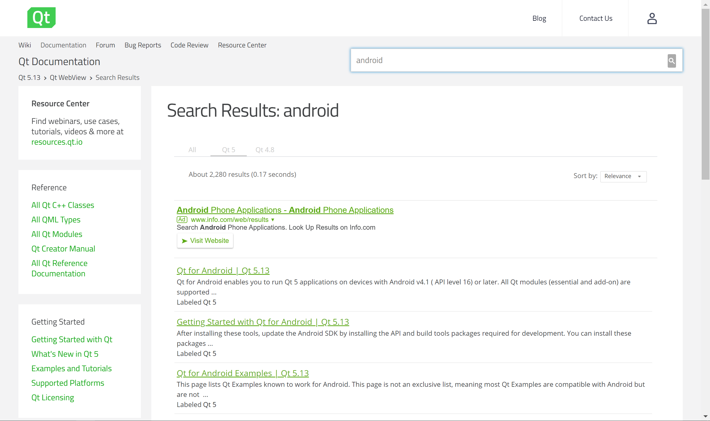
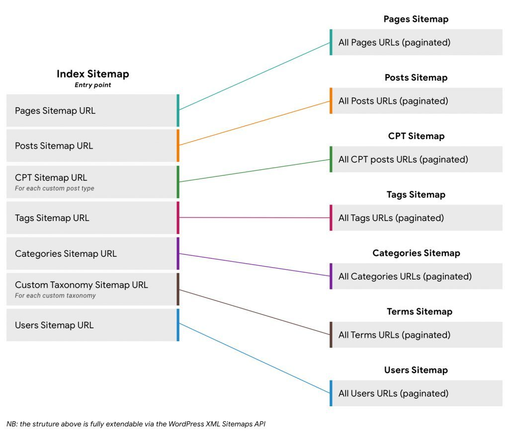

布局和导航
结构清晰的 API 文档页面，能让开发者更方便的阅读内容和定位需要了解的部分。结构应该简单，内容不宜过于复杂，关注文档内容的展示和良好阅读。
单页设计准则
很显然，单页设计并非所有项目的理想选择。但假如可能的话，有一大堆理由使用它。
- 简单易用
- SEO 优化
- 利于组织
- 完整性
- 兼容移动端等其他平台
文档结构
- 粘性导航： 对于任何创建长文档的人来说，粘性导航是必须的，因为它始终保持导航侧边栏的可见性。
- 保存滚动状态： 如果用户刷新页面，保存滚动状态会很有用。如果访问者从浏览器复制/粘贴URL，甚至可以将最近的标题链接添加到 URL 中作为哈希链接。
- 边栏导航样式： 手风琴和非手风琴左侧边栏导航都大量用于文档，并取决于导航链接数量等因素。
- 三栏文档： 3列文档可以帮助开发者找到核心 API 功能实现和快速查看引用。
完整的搜索功能
搜索功能能提高用户使用产品的效率，帮助用户从庞大的数据内容中快速找到关键内容，因此 API 文档的搜索功能也是非常重要的一部分。 
快速导航
在文档的内容加入快速导航、滑动导航等等，能让用户快速定位功能模块，更加便捷的使用 API 文档。
网站地图
把 API 文档分成一个个模块地图，对模块重新分类成组，易于管理和维护，使用者能更直观的了解整个文档内容分类组成。 
保持交互
- 快速回到顶部
- 编辑器和预览器的交互
- 不同设备的渲染兼容